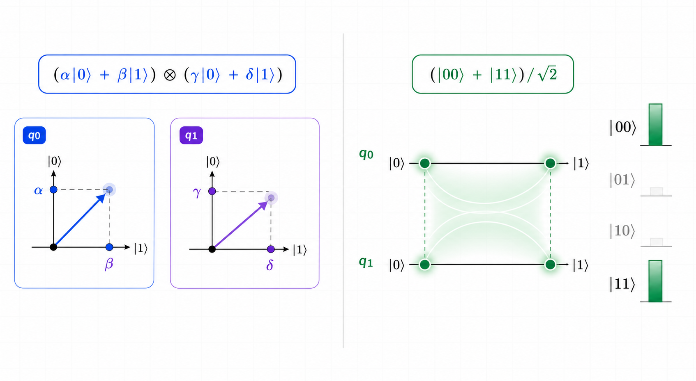

Chapter 8. What Does Entanglement Mean?
Entanglement is one of the most famous ideas in quantum computing, but it is also one of the easiest to misunderstand at first.
It is not best understood as two qubits mysteriously sending signals to each other.
In the standard language, a two-qubit state is entangled when the whole state cannot be decomposed into two separate one-qubit states.
Other states can only be described accurately by treating the two qubits as one shared state vector.
Entanglement appears in that second situation.

Start with a separable state
If the first qubit is in state α|0⟩ + β|1⟩ and the second qubit is in state γ|0⟩ + δ|1⟩, and we can say those two things separately, then the whole two-qubit state can be written like this.
The symbol ⊗ is read as the tensor product.
A tensor product combines two states into a state in a larger state space.
For now, it is enough to read it as “write each qubit separately, then combine them.”
This kind of state is called a separable state.
Expanded in the four two-qubit measurement outcomes, the same expression becomes this.
An amplitude from the first qubit and an amplitude from the second qubit multiply together to form the amplitude of each two-bit outcome.
| Measurement outcome | Amplitude from the first qubit | Amplitude from the second qubit | Total amplitude |
|---|---|---|---|
00 | α | γ | αγ |
01 | α | δ | αδ |
10 | β | γ | βγ |
11 | β | δ | βδ |
In a separable state, they come tied together as products of the two qubits' amplitudes: αγ, αδ, βγ, and βδ.
But because the whole state can be written as (α|0⟩ + β|1⟩) ⊗ (γ|0⟩ + δ|1⟩), separated into the states of the two qubits, it is not an entangled state.
Now look at a state that cannot be built from that product pattern
For a separable state, the four amplitudes come from products such as αγ, αδ, βγ, and βδ.
Now look at a representative two-qubit state that cannot be made in that product pattern.
This state has only the |00⟩ component and the |11⟩ component.
Measuring gives 00 or 11 with 50% probability each, while 01 and 10 never appear.
So we should read the two-bit result as tied together, rather than as two unrelated random one-bit results.
| Measurement outcome | Amplitude | Measurement probability |
|---|---|---|
00 | 1/√2 | 50% |
01 | 0 | 0% |
10 | 0 | 0% |
11 | 1/√2 | 50% |
00 is αγ, and the amplitude of 11 is βδ.In the state above, the amplitudes of
00 and 11 are both nonzero, so α, β, γ, and δ would all have to be nonzero.Then the amplitude αδ of
01 and the amplitude βγ of 10 would also be nonzero.But in the state above, the amplitudes of
01 and 10 are exactly zero. That is why this state cannot be separated into the states of the two qubits, and why it is entangled.
Each qubit can be described separately
We can write the first qubit state and the second qubit state separately, then combine them into the whole state.
The whole state comes first
Looking at each qubit alone does not fully explain the relationship between the possible two-qubit measurement results.
Superposition means several basis directions participate in one state vector, while entanglement means a multi-qubit state cannot be separated into individual qubit states.
We will study the CNOT gate later
Entangled states are often created by applying an H gate to one qubit and then applying a two-qubit gate such as CNOT.
Here, we will not calculate the detailed CNOT rule yet. We only need the meaning of entanglement first.
We return to the CNOT gate carefully in Chapter 13.
First see the shape of an entangling circuit
operation Main() {
// Prepare two qubits
// Starting state: |00⟩
use q = Qubit[2];
// Apply H to the first qubit
// A superposition appears on the first-qubit side
H(q[0]);
// Connect the two qubits with CNOT
// We revisit the detailed rule in the CNOT chapter
CNOT(q[0], q[1]);
// In an ideal execution environment: 00 or 11 appears together
bit first = M(q[0]);
bit second = M(q[1]);
}